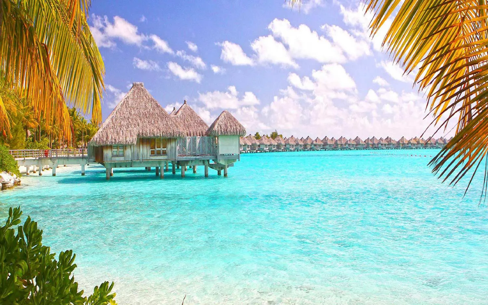

×

Bahamas
Климат
Тропический пассатный на севере и субтропический на юге. Температура летом колеблется от +26 до +32 С. На южных островах (Большой и Малый Инагуа, Маягуана и др.) летом значительно теплее, чем в центральной части архипелага. Температура в отдельные дни здесь может доходить до +40 С (с июня по август), но пассаты заметно смягчают жару на всей территории страны. Зимой температура колеблется от +18 до +22 С с минимальными температурами до +15 C (Малый Абако и другие северо-западные острова).
Осадков выпадает до 800 мм с неярко выраженным дождливым сезоном в период с мая по октябрь. В зимний период дожди нечасты, обычно они выпадают в виде коротких, но мощных, ливней, длящихся не более нескольких часов. Ураганы и тропические штормы, периодически проходящие над территорией островов в период с мая по ноябрь, приносят обильные осадки, сопровождаемые ураганными ветрами. Температура воды обычно составляет +27 С летом и около +23 С зимой.
____